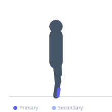

Exercise guide / Tibialis Wall Raise with Isometric Hold
Tibialis Wall Raise with Isometric Hold
A tibialis anterior strengthening exercise performed standing with the back against a wall and heels a short distance from the wall. The exerciser raises the toes and forefoot off the floor (dorsiflexion) and holds the top position for a prescribed duration. The isometric hold component greatly increases time-under-tension for the tibialis anterior compared to repetitive raises, making it effective for shin splint rehabilitation and tibialis anterior endurance development.
Primary muscles
tibialis anterior
Secondary muscles
Equipment
No Equipment (Bodyweight)


Starting position
- Stand with the back flat against a wall, feet approximately 30-40 cm from the wall, heels on the floor. The calves rest gently against the wall for proprioceptive feedback.
Setup
- No equipment needed. Any wall works. Ensure the floor surface is non-slip.
Steps
- Step 1: Stand with back against the wall, heels on the floor, feet slightly away from the wall.
- Step 2: Raise both forefeet off the floor to maximum dorsiflexion — toes pointing toward the ceiling.
- Step 3: Hold the dorsiflexed position for the prescribed duration (5-30 seconds), maintaining maximum height.
- Step 4: Lower slowly to the floor. Rest briefly and repeat.
Coaching cues
- Lift the toes as high as possible toward the ceiling
- Feel the outer shin muscles working — that is the tibialis anterior
- Keep breathing during the hold — count seconds to track duration
Breathing
- Breathe continuously during the hold. Do not hold your breath.
Range of motion
- Full dorsiflexion — toes as high as possible from the floor.
Tempo
- 2s raise, 5-30s isometric hold, 2s lower. Begin at 5s holds and progress to 30s.
Common mistakes
- Partial dorsiflexion — not raising the toes to their full height
- Pushing through the toes rather than lifting the forefoot
- Leaning forward away from the wall — maintain full back-wall contact
Safety
- If acute shin splints are present, begin with very short holds (3-5 seconds) and progress as symptoms allow
- Pain during the exercise above 3/10 suggests the load or duration should be reduced
Training
- endurance: 5–10 reps
- strength: 3–8 reps
- endurance: 2–4 sets
- strength: 2–3 sets
- Rest: {'endurance': 30, 'strength': 60}